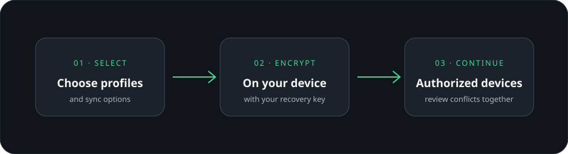

五分钟开始使用
NodeCloak 为不同用途建立各自独立的浏览器空间。先安装浏览器，再创建一个副本并启动。
安装 NodeCloak 与浏览器
从 官网下载桌面应用。Chrome、Edge 或 Firefox 需要先安装在电脑上，NodeCloak 会检测可用浏览器。
新建浏览器副本
打开左侧「浏览器副本」，选择「新建副本」，填写名称并选择浏览器。可以为不同用途分别创建副本。
设置代理与启动页
按需要选择系统代理、直连或单独填写代理地址。也可以设置启动网址、标签和备注；首次使用可先检测代理连接。
启动并登录网站
点击「启动」，在新打开的独立浏览器窗口中正常访问网站和登录。每个副本单独保存网站数据。
NodeCloak 为副本准备独立的数据目录。首次启动时，网站需要在这个副本中重新登录。
管理浏览器副本
副本承载一组独立的浏览器设置与网站数据。你可以用标签分类、批量启动或整理不再使用的副本。
独立保存
Cookie、网站登录和浏览记录保存在各自副本中。
批量管理
搜索名称、标签或代理；多选后统一启动、停止或移入回收站。
复制设置
克隆副本可复用配置，并为新副本生成独立指纹。
整理与恢复
- 用标签和备注标记用途，再用搜索或标签筛选器快速定位。
- 移入「最近删除」的副本可以恢复；永久删除会清除该副本的数据。
- 复制副本会复制可复用的配置，不会把原副本的登录会话直接带到新副本。
代理与浏览器环境
代理和环境选项按副本设置。保存配置后重新启动副本，使浏览器使用更新后的设置。
选择系统代理、直连，或设置 HTTP、HTTPS、SOCKS5 地址。启动前可运行代理检测查看出口连通性。
语言和时区可以跟随代理 IP 自动匹配，也可以按需指定；定位、通知、摄像头与麦克风等权限可逐项管理。
新建副本会得到独立指纹；同一副本重启后保持稳定。需要更换时，在副本设置中使用「重新生成指纹」。
可设置 WebRTC、Canvas、WebGL 与 AudioContext 等浏览器特征。默认噪音模式会为副本生成可重复的环境表现。
代理出口、语言和时区共同描述浏览环境。修改代理后检查区域设置，再在目标网站查看实际表现。
在设备间同步，或分享给朋友
云端同步让你在已授权设备间接续所选副本；好友分享会发送一份独立快照。

设置云端同步
- 登录账号，打开「偏好设置 → 云端同步」，开始初始化并安全保存恢复密钥。
- 关联要同步的副本，选择是否同步网站登录状态，再连接其他授权设备。
- 选择自动同步或手动执行。发现冲突时先查看本机与云端版本，再选择保留方向。
恢复密钥用于在新设备上解密同步数据。失去密钥和所有已授权设备后，云端数据无法恢复。
好友分享
输入接收人的账号信息并设置有效期。接收人接受邀请后使用一份独立快照；后续调整或撤销分享，可在自己的分享管理中完成。分享登录状态前，确认其中的账号仍适合提供给对方使用。
登录状态受浏览器和网站保护机制影响。迁移到新设备后，网站可能要求重新登录。
为终端选择工作目录
在终端页面选择项目文件夹，再打开 Claude Code、Codex CLI、Gemini CLI 或普通终端。
工作目录 C:\Users\you\Projects\my-app
> claude
目录选择器支持直接填写完整路径或浏览选择文件夹。命令行工具需要单独安装并完成它自己的账号登录；浏览器副本的代理设置不会自动改变终端网络出口。
常见问题排查
启动浏览器后页面一直加载
检查代理地址、端口和认证信息，运行代理检测；再确认本机网络可访问目标网站。可先用直连测试，区分浏览器与代理连接问题。
提示页面导航或加载超时
网页可能加载缓慢、跳转到其他域名，或等待了较长的第三方资源。确认目标地址能够在普通浏览器打开，再重试；如果浏览器副本窗口仍在，可以直接检查页面实际状态。
新副本与原副本表现不同
新副本使用独立的 Cookie、网站存储和指纹，网站会把它当作一个新环境。按需重新登录，并检查副本的代理、语言、时区和权限。
设置修改后没有生效
先停止正在运行的副本，再启动一次。部分浏览器参数只会在浏览器启动时读取。
同步后网站仍要求登录
部分网站登录数据受设备密钥或浏览器策略保护。确认已启用登录状态同步，然后按网站提示重新验证。
诊断后如何撤销修改
在「修复记录」查看可恢复的系统设置快照，并按记录还原。应用更新与个人配置可在偏好设置中查看。
把问题描述清楚，排查会更快。
提供应用版本、浏览器类型和完整错误文字；截图请先遮住账号、密钥与个人信息。